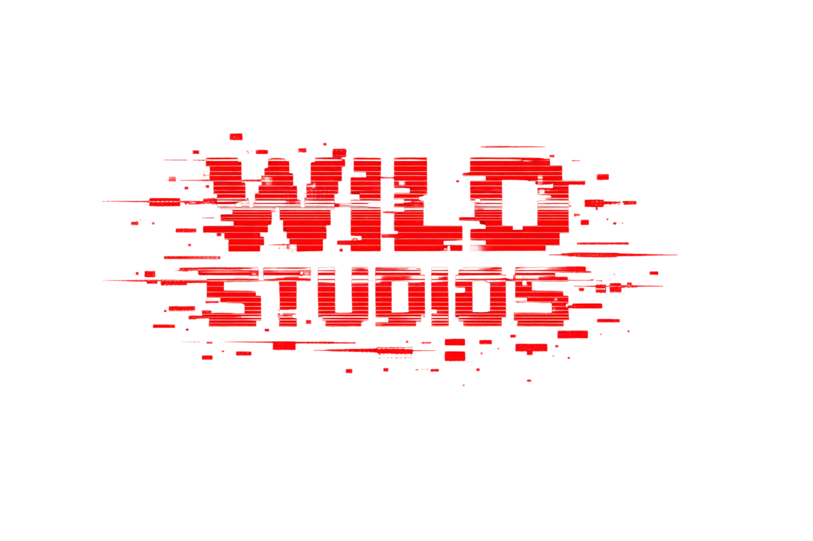

donde las historias se juegan
> Sobre Nosotros
Wild Studios es un estudio creativo de desarrollo de videojuegos que combina tecnología, arte y narrativa para crear experiencias interactivas con impacto social. Desde la ciudad de Cúcuta, nuestro equipo trabaja en el diseño de mundos digitales que no solo entretienen, sino que también cuentan historias, generan reflexión y conectan a las personas con realidades y emociones a través del juego.
"Creemos que los videojuegos son una poderosa herramienta cultural capaz de inspirar, educar y transformar la manera en que las personas perciben su entorno."
MAIN QUEST: Misión
Desarrollar videojuegos innovadores que integren arte, tecnología y narrativa para crear experiencias interactivas que entretengan, inspiren y generen impacto social, impulsando el talento creativo y tecnológico desde nuestra región hacia el mundo.
ULTIMATE GOAL: Visión
Convertirnos en un estudio de videojuegos reconocido por crear experiencias digitales originales que fusionen entretenimiento y conciencia social, posicionando a Cúcuta como un referente emergente en la industria creativa y del desarrollo de videojuegos en Latinoamérica.